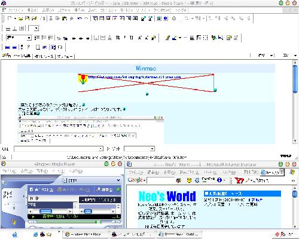

でかいんでリンクにした。重いし。
これは管理人の (前の) デスクトップだよ。ビジュアルスタイルっていうソフトを使って、デザインをマックにしたのを取り込んで作った。なかなかいいでしょ？
突然だがあのデスクトップは全くの嘘。文字は英語じゃないし、デスクトップにはアイコンは1つもないんだ。これがいつもの感じ。そんなのはどうでもいいか (いいのか？)。とにかく、話を進めよう。

私は PC 雑誌で「ビジュアルスタイル」というものを知って、やってみたいと思った。20分程度で、このデザインにできた。そこで思った。「これってかっこよくない？」(ごく普通の感想)
翌日、この画面を再び見て思った。「これを Flash に取り込んだら…」そこから製作が始まった。製作の過程をまとめてみた。何か役に立てたらいいけど。
swf ファイルのみ) で動かした時のためにやっておく (やっておいてよかったw)。結構大変なのが分かったかな？
WindowsXP 時代のデスクトップを再現した Flash。当時は Visual Style などのソフトで MacOS 風のデザインにするのに凝っていた。
お小遣い稼ぎサイトで住所入力などを自動化するためによく使っていた「DrePos」、カッコ良いと思って入れるだけ入れていた Opera、Lunascape などのアイコンが見える。ホームページビルダーのアイコンは V6 か V6.5 かな。Flash 5 から Flash MX に完全移行したっぽい。IE6 には Google ツールバーと Yahoo! ツールバーがインストールされている。
当時としてはまぁまぁ力作だったと思う。800x600px というサイズも当時としては大きめだったので、ページ内には埋め込まず Flash ファイルへのリンクのみとしていた。